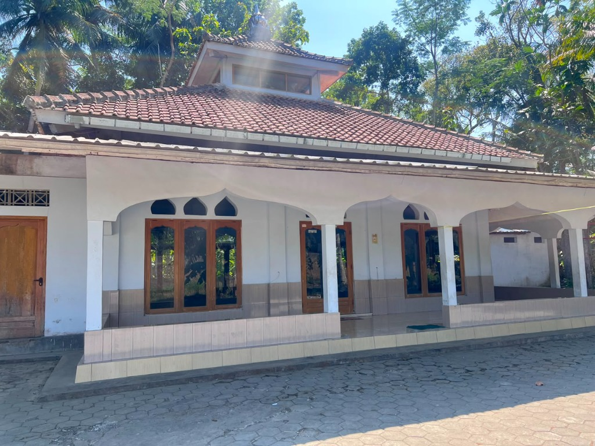

Selamat Datang di Masjid Al Firdaus
Pusat sarana tempat beribadah sholat fardhu 5 waktu, pelaksanaan Sholat Jumat berjamaah, pengajian majelis taklim, dan kebersamaan warga Dukuh Kaligondang, Desa Temon Wetan, Kapanewon Temon, Kulon Progo.

Jelajahi Profil Masjid Al Firdaus
Pilih menu di bawah ini untuk mengakses informasi lengkap terkait sejarah, susunan takmir, layanan infaq, jadwal ibadah, fasilitas, dan kontak.
Sejarah & Transformasi
Perjalanan awal dari Mushola Al Firdaus (2009) hingga resmi beralih status menjadi Masjid (2026 / 1448 H) sebagai tempat beribadah masyarakat luas.
Buka Halaman SejarahStruktur Takmir Masjid
Susunan pengurus takmir: Ketua Muh Abdul Azis, Sekretaris Ari Setiyono, Bendahara Sudarsih, serta 8 seksi bidang pelayanan jamaah.
Lihat Pengurus TakmirLayanan Infaq & Sedekah
Rekening resmi Bank BPD DIY Capem Temon No. 024.231.001470 a.n. MUH ABDUL AZIS QQ MUSHOLLA AL FIRDAUS untuk operasional tempat ibadah warga.
Salurkan Infaq & ZISJadwal Sholat & Ibadah
Waktu sholat 5 waktu otomatis untuk wilayah Kaligondang, Temon Wetan, waktu imsakiyah, dan panduan adab berjamaah di masjid.
Lihat Jadwal SholatAgenda & Program
Jadwal sholat wajib 5 waktu berjamaah, Sholat Jumat rutin mingguan, pengajian majelis taklim warga, dan penyelenggaraan ibadah qurban.
Lihat Agenda KegiatanFasilitas & Galeri Foto
Sarana prasarana ruang sholat utama, tempat wudhu bersih, sound system, perlengkapan jenazah, dan dokumentasi foto masjid.
Lihat Fasilitas & FotoPeta Lokasi & Kontak
Peta navigasi Google Maps Dukuh Kaligondang Temon Wetan, nomor WhatsApp pengurus takmir, dan formulir kirim pesan aspirasi warga.
Buka Peta & KontakSalurkan Infaq & Makmurkan Masjid
Donasi dan infak Anda disalurkan secara amanah untuk pemeliharaan tempat ibadah, operasional listrik/air masjid, perawatan kebersihan, dan kegiatan keagamaan warga Kaligondang.